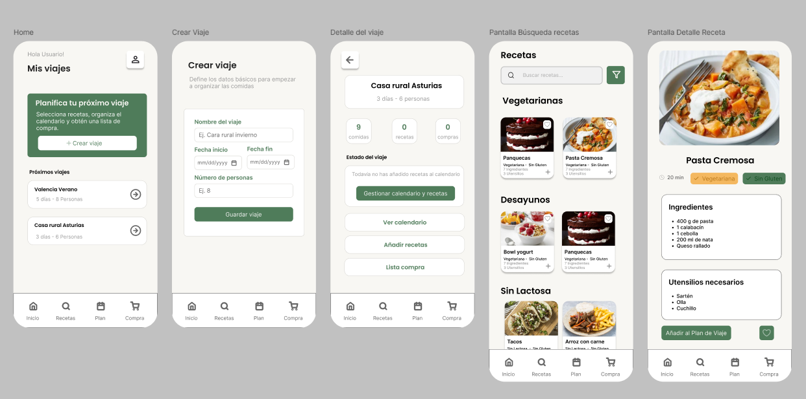
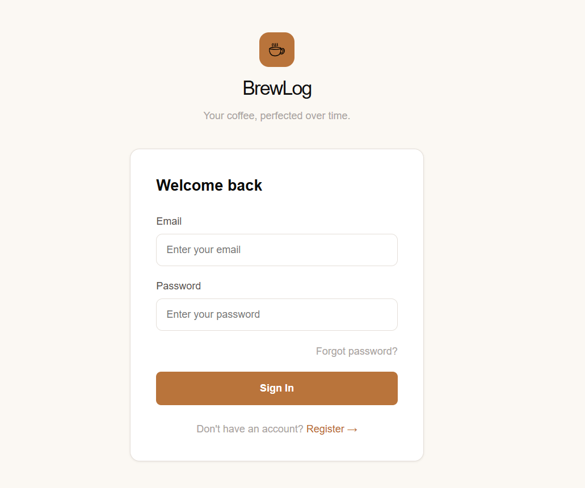
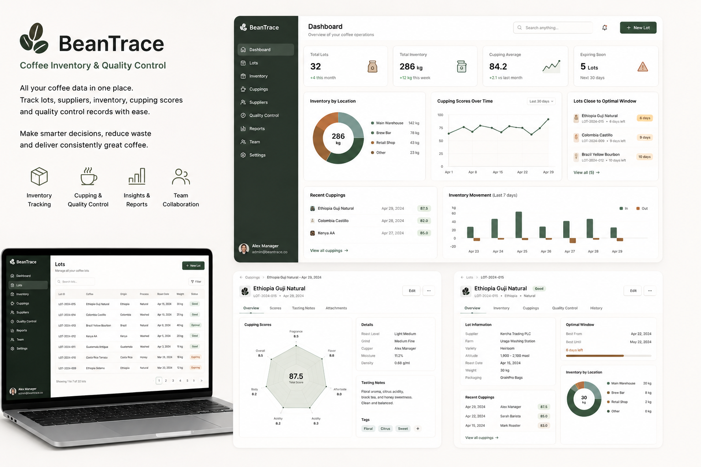

Higher Technician in Multiplatform Application Development (DAM)
The Power PROMETEO
September 2025 - June 2027
Hello! I´m Mariana
I build clean, functional web and cross-platform applications using React, Node.js, REST APIs, MongoDB, and Azure, with a focus on practical solutions and continuous learning.
I am a Full Stack Developer in training, currently studying Multiplatform Application Development and building practical projects that connect software with real operational needs. My work focuses on creating clean, functional applications using Java, JavaScript, React, Spring Boot, REST APIs, SQL, and MongoDB.
Before moving into software development, I worked for several years in the specialty coffee industry, where I developed strong problem-solving, communication, organization, and attention-to-detail skills. That background helps me approach technology with a practical mindset: understanding real workflows, identifying pain points, and building tools that make everyday processes easier.
The Power PROMETEO
The Power PROMETEO
Microsoft
Microsoft
Microsoft
Universidad Nueva Esparta Caracas - Venezuela
Colegio San Ignacio Loyola Caracas - Venezuela

Desktop application created to solve the lack of visibility caused by incident reports arriving through different communication channels across a coffee shop chain.
The app centralizes incident tracking, progress updates, budget approvals, change requests, additional issue records, notifications, role-based access, and multi-location management in one organized workflow.

Web application designed to simplify meal organization for group trips. It replaces scattered spreadsheets and group chats with a centralized platform where users can create trips, schedule recipes for each breakfast, lunch, and dinner, and adapt meal plans to the number of travelers.
The application automatically calculates ingredient quantities and generates a consolidated shopping list from the planned meals, making trip planning faster, more organized, and less prone to forgotten or duplicated purchases.

BrewLog is a mobile application designed for home baristas and specialty coffee enthusiasts who want to keep track of every coffee they brew. It allows users to manage their coffee collection, brewing equipment, and brewing sessions while recording every variable involved in the extraction process.
The application stores brewing parameters such as grind size, water temperature, brew ratio, pour structure, tasting notes, and sensory ratings. By keeping a complete brewing history and generating recommendations for future brews, BrewLog helps users consistently reproduce their best recipes and continuously improve their coffee-making skills.

Web application designed for small coffee shops and roasteries to manage coffee lots, supplier information, roast dates, inventory levels, cupping scores, tasting notes, and quality control records from one centralized dashboard.
The system helps teams monitor stock, identify coffees close to their optimal usage window, compare sensory results, and make better purchasing and brewing decisions through organized data and visual summaries.
Java
JavaScript
Python
SQL
HTML5
CSS3
React JS
Node JS
Springboot
Giy & GitHub
AWS
MongoDB
I’m open to internship opportunities, junior developer roles, and collaborative projects where I can keep growing as a Full Stack Developer. If you’d like to connect, discuss an idea, or know more about my work, feel free to reach out.